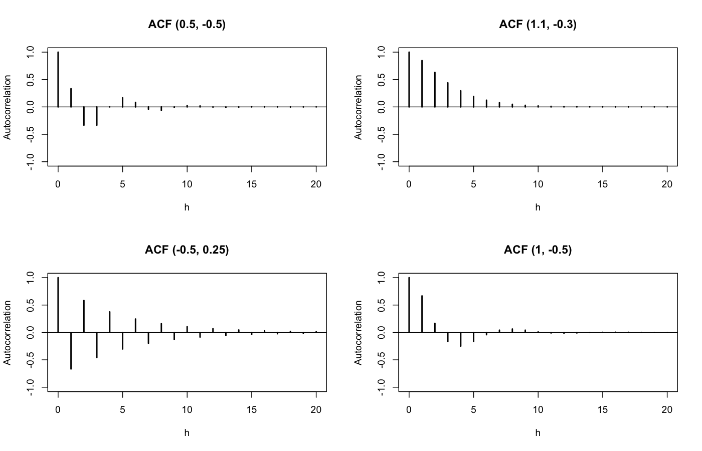
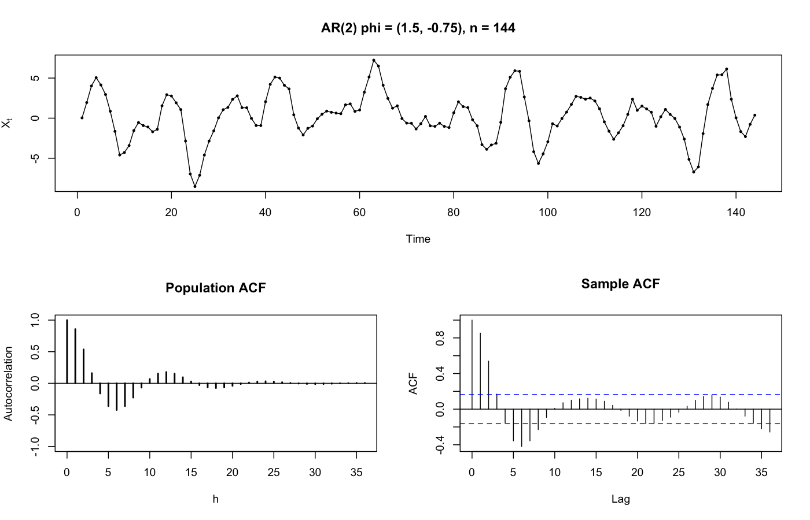
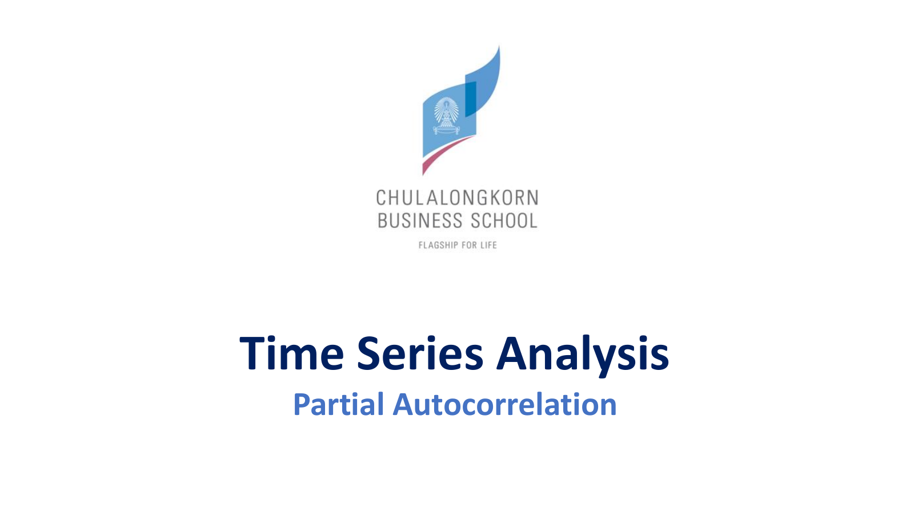
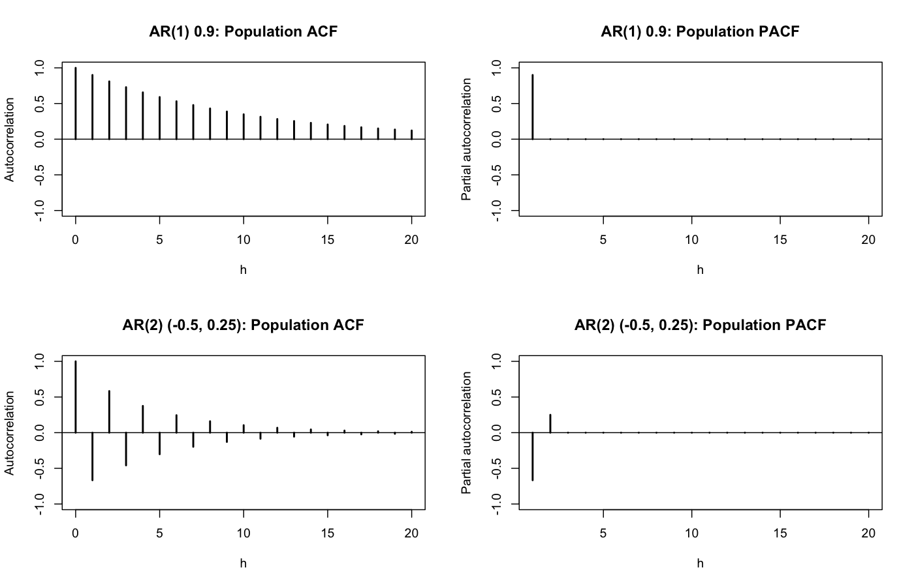
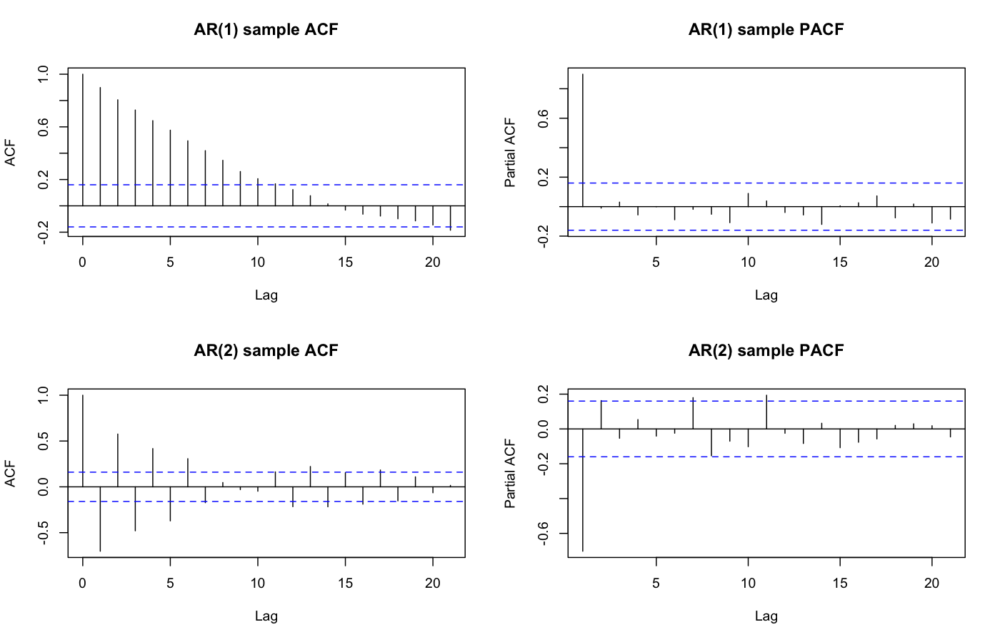
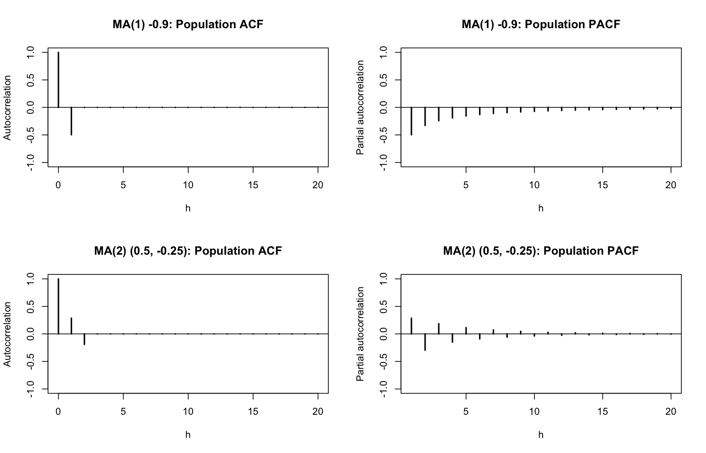
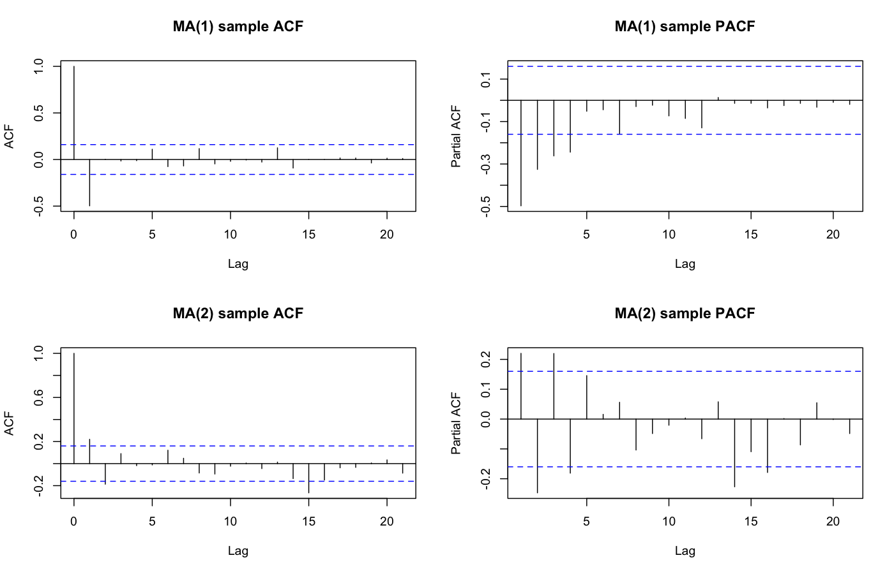
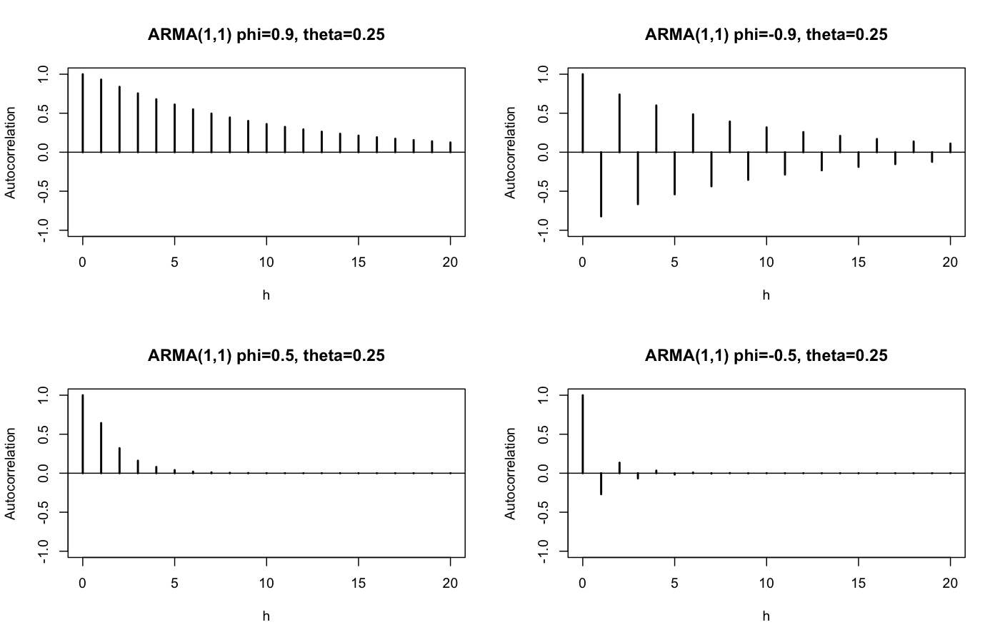
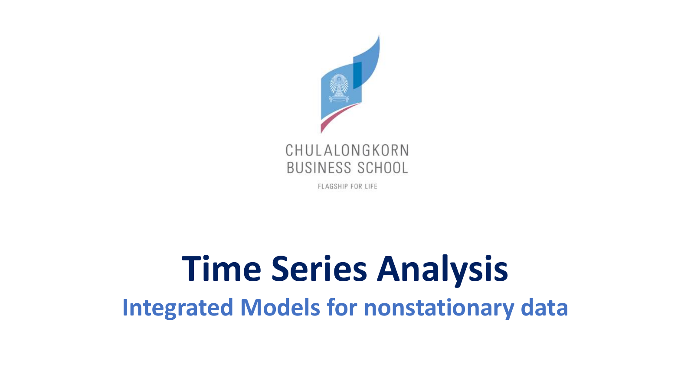

Slide 6 — Model for Stationary Time Series (Part 2) · 55 หน้า · คลิป Class 6 (2:09:07)
Lesson 5 จบที่ปัญหาหนึ่ง: ACF บอก q ของ MA ได้ แต่บอก p ของ AR ไม่ได้ เพราะ ACF ของ AR ทุกอันดับค่อย ๆ ลดลงเหมือนกัน และ AR ใช้ได้กับข้อมูลนิ่งเท่านั้น บทนี้แก้สองปัญหานั้นตามลำดับที่อาจารย์สอน
| หัวข้อ | เนื้อหา | สไลด์ |
|---|---|---|
| 1 | ทบทวน MA, AR และ ARMA | 2–8 |
| 2 | AR(2): characteristic polynomial และเงื่อนไขความนิ่ง | 9–15 |
| 3 | ACF ของ AR(2): Yule-Walker และสี่ตัวอย่าง | 16–21 |
| 4 | AR(p) และการเทียบกับ MA(q) | 22–24 |
| 5 | Exercise ท้ายส่วน AR | 25–26 |
| 6 | PACF: แนวคิด partial correlation | 27–31 |
| 7 | PACF ของอนุกรมเวลา: นิยาม φ_hh | 32–37 |
| 8 | PACF ของ AR และ MA และตารางสรุป | 38–43 |
| 9 | ARMA ผสม และ EACF | — (R_codes) |
| 10 | ARIMA(p,d,q) | 44–50 |
| 11 | Examples: ดูเหมือน AR(2)/ARMA(2,2) แต่ไม่ใช่ | 51 |
| 12 | IMA(1,1) และ IMA(2,2) | 52–55 |
| 13 | แบบฝึกห้าแบบ | — |
MA(q) เขียนเป็น \(X_t=\theta(B)w_t\) โดย 𝜽(𝑩) คือ \(1+\theta_1B+\dots+\theta_qB^q\) จาก Lesson 5 ค่า \(X_t\) เป็นผลรวมของ shock ปัจจุบันกับย้อนหลัง q ช่วง ACF จึงเป็นศูนย์หลัง lag q อาจารย์ทวนตัวอย่าง MA(1) ที่ θ = −0.9: \(\rho_1=-0.9/1.81=-0.497\) และ lag 2 เป็นต้นไปเป็นศูนย์ (Class 6, 0:16:28–0:17:50)

AR(p) เขียนเป็น \(\Phi(B)X_t=w_t\) โดย \(\Phi(B)=1-\phi_1B-\dots-\phi_pB^p\) ต่างจาก MA ตรงที่ตัวแปรที่อยู่ด้านขวาของสมการเดิมคือ X ย้อนหลังซึ่งเป็นตัวแปรสุ่ม ไม่ใช่ shock ที่อิสระกัน

สไลด์ชี้ปัญหาสองข้อ ข้อแรก ตัวแปรด้าน (right-handside of equation) คือ \(X_{t-1},X_{t-2},\dots\) สัมพันธ์กันเอง เช่น AR(1) ที่ φ = 0.9 มี \(X_{t-1}\) กับ \(X_{t-2}\) สัมพันธ์กันถึง 0.9 สมมุติฐานของ regression ทั่วไปจึงใช้ไม่ได้ตรง ๆ ข้อสอง การเลือกว่าจะใส่ X ย้อนหลังกี่ตัว (p) ไม่ง่าย ปัญหาข้อสองนี้คือเหตุผลที่ต้องมี PACF ในหัวข้อ 6–8

ทฤษฎีบทจาก Lesson 5: AR(p) นิ่งก็ต่อเมื่อรากของ characteristic polynomial ทุกตัวมีค่าสัมบูรณ์เกิน 1 หรือ modulus เกิน 1 ถ้าเป็นจำนวนเชิงซ้อน ตัวอย่างที่ใช้ซ้ำทั้งบท: \(\Phi(x)=1-1.1x+0.3x^2=(1-0.5x)(1-0.6x)\) มีราก 2 และ 1.667 เกิน 1 ทั้งคู่ จึงนิ่ง

สำหรับ AR(1) ราก \(1/\phi\) เกิน 1 เมื่อ \(|\phi|<1\) อาจารย์บอกว่า "ฟีไม่สามารถเป็นเลขอะไรอิสระได้ ... เวลาคุณรันในโปรแกรม R หรือ Python ฟีที่มันให้มาจะอยู่ในช่วงนี้ ... ถ้ามันเกินช่วงนี้ ... มันจะไม่ converge" (Class 6, 1:16:22–1:17:04) ตัวอย่าง φ = 1.2: เริ่มที่ \(X_0=1\) ไม่มี shock จะได้ 1.2, 1.44, 1.73, 2.07 โตขึ้นเรื่อย ๆ ไม่กลับมาที่ค่าเฉลี่ย ส่วน φ = 0.8 ได้ 0.8, 0.64, 0.51 ค่อย ๆ กลับสู่ศูนย์ นี่คือความหมายเชิงภาพของความนิ่ง

ARMA(p,q) รวมสองส่วน: \(X_t=\sum\phi_jX_{t-j}+\sum\theta_jw_{t-j}+w_t\) หรือ \(\Phi(B)X_t=\theta(B)w_t\) ARMA(p,0) คือ AR(p) และ ARMA(0,q) คือ MA(q) (Class 6, 1:27:57) ตัวอย่าง: \(X_t=0.6X_{t-1}+w_t+0.8w_{t-1}\) คือ \((1-0.6B)X_t=(1+0.8B)w_t\) เป็น ARMA(1,1) ซึ่งเป็นโมเดลที่ใช้ใน EACF หัวข้อ 9

ARMA ใช้ได้เมื่อข้อมูลนิ่งเท่านั้น คือไม่มี trend ไม่มี seasonal และ variance คงที่ (Class 6, 1:28:32) ข้อมูลจริงที่ไม่นิ่งที่เจอบ่อยมีสองแบบ แบบแรกมี trend "เจอบ่อยมาก" ซึ่งแก้ด้วย differencing กลายเป็น ARIMA ในหัวข้อ 10 แบบที่สองแกว่งไม่เท่ากัน ซึ่งต้องใช้ log หรือโมเดล variance (ARCH/GARCH) ที่จะเรียนทีหลัง (Class 6, 1:30:01–1:31:15)

AR(2) คือ \(X_t=\phi_1X_{t-1}+\phi_2X_{t-2}+w_t\) ค่าปัจจุบันเป็นผลรวมถ่วงน้ำหนักของสองค่าก่อนหน้าบวก shock ใหม่ ตัวอย่างความหมาย: ถ้า φ₁ = 1.1 และ φ₂ = −0.3 ค่าวันนี้ตามเมื่อวานไปแรง (1.1) แต่ถูกดึงกลับด้วยค่าเมื่อวานซืน (−0.3) ผลรวม 1.1 − 0.3 = 0.8 < 1 อนุกรมจึงกลับสู่ค่าเฉลี่ยได้

สมมุติฐานเหมือน AR(1): mean เป็นศูนย์ (ถ้าไม่ใช่ให้ใช้ \(X_t-\mu\)) และ \(w_t\) อิสระจาก \(X_{t-k}\) ทุก k ≥ 1 สไลด์ยอมรับว่าเรื่องความนิ่งของ AR(2) ขึ้นไป becomes very theoretical และเลือกสอนเฉพาะจุดสำคัญ อาจารย์ก็ทำเช่นเดียวกัน คือสอนสั้น ๆ เฉพาะเงื่อนไขสามเหลี่ยม (Class 6, 1:15:23–1:26:44)

แทน \(X_{t-1}=BX_t\) และ \(X_{t-2}=B^2X_t\) แล้วย้ายข้าง: \((1-\phi_1B-\phi_2B^2)X_t=w_t\) วงเล็บนี้คือ 𝟏−𝝓𝟏𝑩−𝝓𝟐𝑩𝟐 หรือ 𝚽𝑩∶ Characteristic polynomial of the process ตัวอย่าง: \(X_t=1.1X_{t-1}-0.3X_{t-2}+w_t\) ได้ \(\Phi(B)=1-1.1B+0.3B^2\) สังเกตว่า φ₂ = −0.3 กลายเป็น +0.3 ในพหุนาม เพราะมีเครื่องหมายลบนำหน้า จุดนี้เป็นที่มาของความผิดพลาดเครื่องหมายบ่อยที่สุด

เพื่อหาราก ให้มอง B เป็นตัวแปรธรรมดา x แล้วแก้ \(1-\phi_1x-\phi_2x^2=0\) ความนิ่งดูจาก ; i.e. the roots of𝚽𝒙. อาจารย์ชอบเขียน B ส่วนหนังสือเขียน x หรือ z (Class 7-2, 0:21:00) และบอกว่านี่คือ "ทฤษฎีอันเดียว คอนเซ็ปต์อันเดียวของวิชานี้" ที่ต้องใช้คณิต (Class 6, 1:23:15)

สไลด์ใช้สูตรรากของสมการกำลังสองกับ Φ(x) โดยตรง แล้วเขียนเงื่อนไขความนิ่งว่าค่าสัมบูรณ์ของรากทั้งสองต้องเกิน 1 ก่อนแทนค่า ทบทวนสูตรก่อน เพราะอาจารย์บอกว่าข้อสอบจะมีแค่สมการกำลังสอง (Class 6, 1:24:42)
\(ax^2+bx+c=0\) มีราก \(x=\dfrac{-b\pm\sqrt{b^2-4ac}}{2a}\) ถ้า \(b^2-4ac\ge0\) รากเป็นจำนวนจริง ถ้า \(<0\) รากเป็นจำนวนเชิงซ้อน \(u\pm vi\) มี modulus \(\sqrt{u^2+v^2}\) อาจารย์บอกว่า "ถ้ามึงไม่เข้าใจ complex number ก็ชั่งมันก่อน" (Class 6, 1:23:15–1:24:35) เพราะข้อสอบส่วนใหญ่เป็นรากจริง
สำหรับ \(\Phi(x)=-\phi_2x^2-\phi_1x+1\) ได้ \(a=-\phi_2\), \(b=-\phi_1\), \(c=1\) แทนในสูตรได้ \(x=\dfrac{\phi_1\pm\sqrt{\phi_1^2+4\phi_2}}{-2\phi_2}\) ตรงกับสไลด์ และเงื่อนไขคือค่าสัมบูรณ์ของรากทั้งสองเกิน 1 ตรวจกับ φ = (1.1, −0.3): \(\phi_1^2+4\phi_2=1.21-1.2=0.01\) ราก \(=\dfrac{1.1\pm0.1}{0.6}\) ได้ 2 และ 1.667 นิ่ง ตรวจกับ φ = (0.5, −0.5): \(0.25-2=-1.75<0\) รากเชิงซ้อน \(0.5\pm1.323i\) modulus \(\sqrt{0.25+1.75}=1.414\) นิ่ง

ถ้าเรียกรากว่า \(x_1,x_2\) จะเขียน AR(2) ได้เป็น \((1-x_1^{-1}B)(1-x_2^{-1}B)X_t=w_t\) กระจายแล้วเทียบสัมประสิทธิ์ได้ \(\phi_1=x_1^{-1}+x_2^{-1}\) และ \(\phi_2=-x_1^{-1}x_2^{-1}\) เมื่อนำไปรวมกับเงื่อนไข \(|x_i|>1\) จะได้เงื่อนไขสามข้อที่ใช้แทนการหาราก
\(\phi_1+\phi_2<1,\qquad \phi_2-\phi_1<1,\qquad |\phi_2|<1\)
อาจารย์ให้จดเงื่อนไขนี้ "ถ้าอันใดอันหนึ่งไม่จริง มันไม่ใช่ AR(2) แล้ว ... คุณอาจจะโดนหลอก" (Class 6, 1:17:53–1:18:40) ที่มาของเงื่อนไขอยู่ใน (See Appendix B, page 84, Cryer and Chan ) ไม่ต้องพิสูจน์ในวิชานี้
1.1 − 0.3 = 0.8 < 1 ✓, −0.3 − 1.1 = −1.4 < 1 ✓, |−0.3| < 1 ✓ นิ่ง ตรงกับราก 2 และ 1.667
−0.25 < 1 ✓, 0.25 + 0.5 = 0.75 < 1 ✓, 0.25 < 1 ✓ นิ่ง ราก −1.236 และ 3.236 ค่าสัมบูรณ์เกิน 1 ทั้งคู่
1.7 − 0.7 = 1 ไม่น้อยกว่า 1 ✗ ไม่ใช่ AR(2) ที่นิ่ง แยกตัวประกอบได้ \((1-0.7x)(1-x)\) มีราก 1 พอดี (หัวข้อ 11)
0.5 + 0.6 = 1.1 ✗ ไม่นิ่ง แม้ φ แต่ละตัวจะน้อยกว่า 1 ก็ตาม

เงื่อนไขสามข้อคือเส้นตรงสามเส้น \(\phi_2=1-\phi_1\), \(\phi_2=1+\phi_1\) และ \(\phi_2=-1\) ซึ่งล้อมเป็นสามเหลี่ยมที่มีจุดยอด (0, 1), (2, −1) และ (−2, −1) (Class 6, 1:19:03–1:19:33) จุดใดอยู่ในสามเหลี่ยมคือ AR(2) ที่นิ่ง เช่น (1.8, 0.9) อยู่นอกเพราะ 1.8 + 0.9 = 2.7 เกิน 1 ภายในสามเหลี่ยมยังแบ่งได้อีกสองส่วนด้วยเส้นโค้ง \(\phi_1^2+4\phi_2=0\): จุดที่อยู่เหนือเส้นโค้ง เช่น (0.5, 0.25) ที่ \(0.25+1=1.25>0\) มีรากจริง จุดที่อยู่ใต้เส้นโค้ง เช่น (0, −0.5) ที่ \(0-2<0\) มีรากเชิงซ้อน ซึ่งทำให้ ACF เป็นคลื่นในหัวข้อถัดไป
ACF ของ AR(1) หาได้ด้วยทริกความนิ่งใน Lesson 5 AR(2) ใช้ทริกเดียวกัน แต่เขียนเป็นสูตรวนซ้ำ (recursion) แทนสูตรปิด

ขั้นแรก คูณทั้งสองข้างของ AR(2) ด้วย \(X_{t-h}\) แล้วหาค่าคาดหมาย ได้ 𝑬(𝑿𝒕𝑿𝒕−𝒉) = 𝝓𝟏𝑬(𝑿𝒕−𝟏𝑿𝒕−𝒉) + 𝝓𝟐𝑬(𝑿𝒕−𝟐𝑿𝒕−𝒉) + 𝑬(𝒘𝒕𝑿𝒕−𝒉) เนื่องจาก mean เป็นศูนย์ \(E(X_tX_{t-h})\) คือ \(\gamma_h\) พอดี และพจน์สุดท้ายเป็นศูนย์เมื่อ h ≥ 1 เพราะ shock ใหม่ \(w_t\) อิสระจากค่าในอดีต \(X_{t-h}\)

จึงได้ \(\gamma_h=\phi_1\gamma_{h-1}+\phi_2\gamma_{h-2}\) หารด้วย \(\gamma_0\) ได้ \(\rho_h=\phi_1\rho_{h-1}+\phi_2\rho_{h-2}\) เรียกว่า Yule-Walker equations อาจารย์บอกว่าเป็น property ของ AR ทุกอันดับ: AR(1) คือ \(\rho_s=\phi\rho_{s-1}\) AR(3) เพิ่ม \(\phi_3\rho_{s-3}\) (Class 6, 0:31:10–0:32:44) แต่ "สมัยก่อนสอนในเวลา ... ใช้ในการ estimate φ ... พอมีนอกเวลามาด้วย ผมจะไม่เน้น ... ให้โปรแกรม estimate เฉย ๆ" (Class 6, 0:32:54–0:33:34)
\(\rho_1=\phi_1\rho_0+\phi_2\rho_{-1}=\phi_1+\phi_2\rho_1\) จึงได้ \(\rho_1=\dfrac{\phi_1}{1-\phi_2}=\dfrac{1.1}{1.3}=0.846\)
\(\rho_2=\phi_1\rho_1+\phi_2\rho_0=1.1(0.846)-0.3=0.931-0.3=0.631\)
\(\rho_3=1.1(0.631)-0.3(0.846)=0.694-0.254=0.440\)
ρ₄ = 0.295, ρ₅ = 0.192, ρ₆ = 0.123 ลดลงแต่ไม่เป็นศูนย์ ตรงกับ ARMAacf(ar = c(1.1, -0.3))

สไลด์บอกว่ามีสูตรปิดสำหรับ closed-form expression ของ ACF AR(2) อยู่ใน Shumway ( (i)-(iii) ,page99 ) แยกสามกรณีตามชนิดราก จุดที่ต้องจำคือทุกกรณีให้ \(\rho(h)\to0\) เมื่อ h เพิ่มขึ้น และสูตรช่วยให้รู้ "รูปร่าง" ของ ACF เพื่อนำไปเทียบกับ sample ACF

สรุปรูปร่าง: ACF ของ AR(2) ลดลงแบบเลขชี้กำลังเสมอ และเมื่อรากเป็นจำนวนเชิงซ้อน ค่า \(\rho_h\) จะขึ้นลงเป็นคลื่นที่ค่อย ๆ เล็กลง เรียกว่า damped sine wave เหตุผลเชิงภาพ: รากเชิงซ้อนทำให้แต่ละก้าวเหมือน "หมุน" ไปบางมุม พร้อมกับหดลงด้วย modulus ค่าจึงวนบวกลบเป็นรอบ ตัวอย่างในหน้า 21 ทำให้เห็นรอบนี้ชัดเจน

สี่กรณีบนสไลด์ทุกกรณีอยู่ในสามเหลี่ยม จึงนิ่งทั้งหมด แต่ชนิดรากต่างกัน กราฟ population ACF ข้างล่างสร้างด้วย ARMAacf() ตามโค้ดใน R_codes ของ Class 5

กราฟ (0.5, −0.5) ขึ้นลงเป็นคลื่นสั้น ๆ แล้วหายเร็ว กราฟ (1.1, −0.3) เป็นแท่งบวกที่ค่อย ๆ เตี้ยลง กราฟ (−0.5, 0.25) สลับบวกลบและหดช้า กราฟ (1, −0.5) ลงไปติดลบราว lag 3–5 แล้วกลับมาใกล้ศูนย์ ตารางข้างล่างอธิบายว่าความต่างนี้มาจากชนิดของราก
| (φ₁, φ₂) | φ₁² + 4φ₂ | ราก (modulus) | ρ₁, ρ₂, ρ₃, ρ₄ | รูปร่าง |
|---|---|---|---|---|
| (0.5, −0.5) | −1.75 | 0.5 ± 1.323i (1.414) | 0.333, −0.333, −0.333, 0 | คลื่นที่หดเร็ว |
| (1.1, −0.3) | 0.01 | 2, 1.667 | 0.846, 0.631, 0.440, 0.295 | บวกทั้งหมด ลดแบบเลขชี้กำลัง คล้าย AR(1) φ บวก |
| (−0.5, 0.25) | 1.25 | −1.236, 3.236 | −0.667, 0.583, −0.458, 0.375 | สลับเครื่องหมาย ลดช้า คล้าย AR(1) φ ลบ |
| (1, −0.5) | −1 | 1 ± i (1.414) | 0.667, 0.167, −0.167, −0.25 | คลื่น ลงไปติดลบแล้วกลับ |
ตารางนี้สอนสองเรื่อง เรื่องแรก รากจริงให้ ACF ที่ดูเหมือน AR(1) ส่วนรากเชิงซ้อนให้คลื่น ดังนั้นเมื่อเห็น sample ACF เป็นคลื่น ให้นึกถึง AR(2) ที่มีรากเชิงซ้อน เรื่องที่สอง ไม่ว่ากรณีใด ACF ก็ไม่ตัดเป็นศูนย์ที่ lag 2 ACF จึงบอกไม่ได้ว่า p = 2 ข้อสังเกต: กรณีที่ 3 บนสไลด์คือ (−0.5, 0.25) แต่โค้ด simulation ใน R_codes_2 ใช้ ar = c(-0.5,-0.25) ซึ่งเป็นอีกโมเดลหนึ่ง (รากเชิงซ้อน modulus 2, ρ₁ = −0.4, ρ₂ = −0.05) sample ACF ในส่วนนั้นจึงไม่ตรงกับ population ACF ของกรณีที่ 3

ตัวอย่างจากหนังสือ \(X_t=1.5X_{t-1}-0.75X_{t-2}+w_t\) ตรวจสามเหลี่ยม: 1.5 − 0.75 = 0.75 < 1, −0.75 − 1.5 < 1, |−0.75| < 1 นิ่ง และ \(\phi_1^2+4\phi_2=2.25-3=-0.75<0\) รากเชิงซ้อน \(1\pm0.577i\) modulus 1.155 มุมของรากคือ \(\arctan(0.577)=30^\circ\) ACF จึงวนครบรอบทุก 360/30 = 12 lag โค้ดใน R_codes_2 คือ ARMAacf(ar = c(1.5,-0.75), ma=0, 50) และ arima.sim(..., n = 144)

อนุกรมขึ้นลงเป็นรอบที่ยาวราว 10–15 ช่วงเวลา คล้ายวัฏจักรธุรกิจ ทั้งที่ไม่มี seasonal จริง population ACF ได้ ρ₁ = 0.857, ρ₃ = 0.161, ρ₆ = −0.422 และกลับมาบวกราว lag 12 sample ACF ของข้อมูลชุดนี้ได้ 0.855, 0.539, 0.169 ที่ lag 1–3 และ −0.419 ที่ lag 6 ใกล้ทฤษฎีมาก บทเรียนคือข้อมูลที่ดูเป็นวัฏจักรไม่จำเป็นต้องมาจาก seasonal อาจเป็น AR(2) ที่มีรากเชิงซ้อน ต่างกันตรงที่รอบของ AR(2) ไม่สม่ำเสมอ เพราะ shock ใหม่รบกวนทุกช่วง

AR(p) ทั่วไปเขียนเป็น \((1-\phi_1B-\dots-\phi_pB^p)X_t=w_t\) และใช้เงื่อนไขรากเดียวกัน: รากทุกตัวของ Φ(x) ต้องมีค่าสัมบูรณ์หรือ modulus เกิน 1 ไม่มีสามเหลี่ยมสำเร็จรูปให้ใช้

เมื่อ p ≥ 3 บริเวณความนิ่งในปริภูมิของ φ quite abstract จึงต้องหารากด้วยโปรแกรม เช่น polyroot() ใน R อาจารย์เล่าว่าเคยออกข้อสอบกำลังสามแล้วทำได้ 2 คนจาก 40 จึงจะออกแค่กำลังสอง (Class 6, 1:24:42) ACF ของ AR(p) หาได้ด้วย Yule-Walker (Shumway, page 121) และมีรูปเป็นผลรวมของการลดแบบเลขชี้กำลัง (จากรากจริง) กับคลื่นที่หดลง (จากรากเชิงซ้อน)

ข้อเปรียบเทียบที่สำคัญที่สุดของสองบท: ACF ของ MA เป็นศูนย์หลัง lag จำนวนจำกัด ส่วน ACF ของ AR ลดลงแบบเรขาคณิตแต่ไม่เป็นศูนย์พอดีที่ lag ใดเลย ตัวอย่าง: MA(1) θ = 0.9 มี ρ₂ = 0 พอดี ส่วน AR(1) φ = 0.9 มี ρ₂₀ = 0.9²⁰ = 0.12 ยังไม่เป็นศูนย์ ความต่างนี้ทำให้ sample ACF ใช้ตัดสินได้ว่าควรใช้ MA หรือ AR แต่บอก p ไม่ได้ อาจารย์บอกว่า ACF ของ AR "ไม่มีประโยชน์อะไรเลย" ในการหา p (Class 6, 1:02:34)

โจทย์นี้ถามว่าถ้าเอา AR(1) ที่นิ่งแล้วมา difference อีก จะได้อะไร เป็นการฝึกใช้สูตร covariance และเป็นคำเตือนเรื่อง over-differencing ใน Lesson 7
\(\gamma_X(h)=\phi^{|h|}\gamma_0\) โดย \(\gamma_0=\sigma^2/(1-\phi^2)\)
\(\gamma_Y(h)=\mathrm{Cov}(X_t-X_{t-1},X_{t+h}-X_{t+h-1})=2\gamma_X(h)-\gamma_X(h+1)-\gamma_X(h-1)\)
\(\gamma_Y(0)=2\gamma_0-2\phi\gamma_0=2\gamma_0(1-\phi)=\dfrac{2\sigma^2(1-\phi)}{(1-\phi)(1+\phi)}=\dfrac{2\sigma^2}{1+\phi}\)
\(\gamma_Y(h)=\gamma_0\phi^{h-1}(2\phi-\phi^2-1)=-\gamma_0\phi^{h-1}(1-\phi)^2=-\dfrac{\sigma^2(1-\phi)}{1+\phi}\phi^{h-1}\)
Var(Y) = 2/1.5 = 1.333 และ γ_Y(1) = −(0.5/1.5) = −0.333 ได้ \(\rho_Y(1)=-0.25\)

ใช้ \(\rho_h=\phi^h\) ดูว่าต้องไปถึง lag ไหนจึงเล็กกว่า 0.05 (ถือว่า "nearly died out")
| φ | ρ₁, ρ₂, ρ₃ | lag แรกที่ |ρ| < 0.05 |
|---|---|---|
| 0.6 | 0.6, 0.36, 0.216 | 6 (0.6⁶ = 0.047) |
| −0.6 | −0.6, 0.36, −0.216 | 6 (สลับเครื่องหมาย) |
| 0.95 | 0.95, 0.903, 0.857 | 59 ที่ lag 20 ยังเท่ากับ 0.358 |
| 0.3 | 0.3, 0.09, 0.027 | 3 |
φ = 0.95 คือเหตุผลที่โจทย์สั่ง "Do out to 20 lags" แม้ถึง lag 20 ACF ยังเหลือ 0.358 กราฟแบบนี้ดูเกือบเหมือน ACF ของอนุกรมที่มี trend ใน Lesson 3 ถ้าเห็น ACF ลดช้ามากต้องตรวจความนิ่งด้วย ADF ก่อน ไม่ใช่สรุปว่าเป็น AR(1) ทันที

ปัญหาที่ต้องแก้: AR(1) φ = 0.9 มี ρ₂ = 0.81 ทั้งที่สมการมีแค่ \(X_{t-1}\) ค่า \(X_{t-2}\) ไม่ได้มีผลต่อ \(X_t\) โดยตรงเลย correlation 0.81 เกิดขึ้นเพราะ \(X_{t-2}\) ส่งผลผ่าน \(X_{t-1}\) ต่อมาถึง \(X_t\) เหมือนการส่งข่าวต่อกันเป็นทอด ๆ ถ้าเราตัดทางอ้อมผ่าน \(X_{t-1}\) ออก correlation ที่เหลือควรเป็นศูนย์ เครื่องมือที่ตัดทางอ้อมนี้คือ PACF อาจารย์บอกว่า ACF "ไม่เหมาะ" กับ AR เพราะค่อย ๆ ลง ต้องใช้ PACF "จดนิดนึง" (Class 6, 0:33:54–0:35:07)

สไลด์วางตำแหน่งของ PACF ในขั้นตอนทั้งหมด: ทำให้นิ่งด้วย differencing ก่อน แล้วดู ACF และ PACF ของอนุกรมที่ difference แล้ว เพื่อตัดสินว่าต้องมี AR หรือ MA กี่พจน์ ลำดับนี้คือ "identification" ใน Lesson 7

สไลด์สรุปสิ่งที่รู้แล้ว: MA(q) ระบุได้จาก ACF เพราะไม่เป็นศูนย์ถึง lag q แล้ว "drops off" เป็นศูนย์ แต่ถ้าเป็น AR ACF ไม่ค่อยบอกอะไรเรื่องอันดับ จึงต้องมีเครื่องมือที่ทำหน้าที่เดียวกันสำหรับ AR(p)

partial correlation คือ conditional correlation คือ correlation ระหว่างสองตัวแปร หลังจากนำผลของตัวแปรกลุ่มอื่นออกไปแล้ว อาจารย์อธิบายผ่าน regression ธรรมดาก่อน (Class 6, 0:36:39–0:43:18): ถ้า Y มีตัวแปรต้น X₁, X₂, X₃ ความสัมพันธ์ระหว่าง X₁ กับ Y "มี X₂, X₃ เจือปนด้วย เรียกว่า confound" partial correlation คือการ remove อิทธิพลของ X₂, X₃ ออก
อาจารย์ยกตัวอย่างการรับนักศึกษาของ UC Berkeley ช่วงทศวรรษ 1970 (Class 6, 0:38:58–0:41:35) ข้อมูลปี 1973 ที่รู้จักกันดี: ภาพรวมผู้ชายถูกรับราว 44% ผู้หญิงราว 35% ดูเหมือนลำเอียง แต่เมื่อแยกดูทีละคณะ หลายคณะรับผู้หญิงในอัตราเท่ากันหรือสูงกว่า ความต่างในภาพรวมเกิดเพราะผู้หญิงสมัครคณะที่แข่งขันสูงมากกว่า คณะจึงเป็นตัวแปรที่ "เจือปน" อยู่ ข้อสรุปเปลี่ยนเมื่อนำตัวแปรนั้นเข้ามาพิจารณา นี่คือเหตุผลที่ต้องมี partial correlation

วิธีคำนวณบนสไลด์มีสองขั้น ขั้นแรกทำ regression สองสมการ: y บน x₁, x₂ และ x₃ บน x₁, x₂ ขั้นสองนำ residuals ของสองสมการมาหา correlation กัน เพราะ we correlate the “parts” of y and x3 that are not predicted by x1 and x2. residual คือส่วนที่ x₁, x₂ อธิบายไม่ได้ correlation ของส่วนที่เหลือจึงเป็นความสัมพันธ์ของ y กับ x₃ ที่ไม่ผ่าน x₁, x₂

ยกแนวคิดเดียวกันมาใช้กับอนุกรมเวลา: partial autocorrelation ระหว่าง \(X_t\) กับ \(X_{t-h}\) คือ correlation หลังจากตัดผลของ \(X_{t-1},\dots,X_{t-h+1}\) ซึ่งเป็นจุดเวลาที่ "ซ่อนอยู่" ตรงกลาง (Class 6, 0:44:29–0:50:41) ที่ lag 1 ไม่มีจุดคั่นกลาง PACF lag 1 จึงเท่ากับ ACF lag 1 พอดี "φ₁₁ = ρ₁ เพราะ lag 1 ไม่มีจุดคั่นกลาง" (Class 6, 0:55:09)

PACF lag 2 คือ covariance ของ \(x_t\) กับ \(x_{t-2}\) เมื่อรู้ \(x_{t-1}\) หารด้วยส่วนเบี่ยงเบนแบบมีเงื่อนไข lag 3 ใส่เงื่อนไขเพิ่มเป็น \(x_{t-1},x_{t-2}\) และ lag สูงขึ้นก็เพิ่มเงื่อนไขไปเรื่อย ๆ ใช้กับ AR(1) φ = 0.9: เมื่อรู้ \(x_{t-1}\) แล้ว \(x_t=0.9x_{t-1}+w_t\) ส่วนที่ยังสุ่มคือ \(w_t\) ซึ่งไม่เกี่ยวกับ \(x_{t-2}\) PACF lag 2 จึงเป็นศูนย์

สไลด์ใช้สัญลักษณ์ \(\phi_{hh}\) (φ₁₁ คือ lag 1, φ₂₂ คือ lag 2) "มันเป็นตัว φ คล้าย ๆ AR ... อาจจะงงนิดนึง" (Class 6, 0:46:46) \(X_h^{h-1}\) คือค่าทำนายของ \(X_h\) จาก regression บน \(X_{h-1},\dots,X_1\) "X ยกกำลัง h−1 ไม่ใช่ยกกำลังนะครับ" (Class 6, 0:49:33) เป็นเพียงป้ายบอกว่าใช้ตัวแปร h − 1 ตัว และ \(X_0^{h-1}\) คือค่าทำนายของ \(X_0\) จากตัวแปรชุดเดียวกัน

\(\phi_{11}=\mathrm{corr}(X_1,X_0)=\rho(1)\) และสำหรับ h ≥ 2 \(\phi_{hh}\) คือ correlation ของส่วนที่เหลือ \(X_h-X_h^{h-1}\) กับ \(X_0-X_0^{h-1}\) ซึ่งเป็นสูตรเดียวกับ residual ของสอง regression ในหัวข้อ 6 ทุกประการ ต่างกันแค่ตัวแปรเป็นค่าของอนุกรมเดียวกันคนละเวลา

ส่วนที่เหลือทั้งสองเรียกว่า prediction errors และถ้าอนุกรมเป็น normal นิยามจะเทียบเท่ากับ 𝝓𝒉𝒉= 𝒄𝒐𝒓𝒓(𝑿𝟎, 𝑿𝒉|𝑿𝒉−𝟏, 𝑿𝒉−𝟐, … , 𝑿𝟏) คือ correlation แบบมีเงื่อนไข ประโยคสรุปที่ควรจำ: \(\phi_{hh}\) วัด correlation ระหว่าง \(X_h\) กับ \(X_0\) หลังจากตัดผลเชิงเส้นของ \(X_{h-1},\dots,X_1\) ออกแล้ว

การคำนวณ PACF จริงใช้ Durbin–Levinson ซึ่ง "ต้องทำย้อนหลังด้วย และก็มีตัว ρ มาเกี่ยวด้วย" และอาจารย์บอกชัดว่า "อันนี้ผมจะไม่ออกสอบ เอาให้คุณเข้าใจคอนเซ็ปต์" (Class 6, 0:53:44–0:54:23) สูตรสำหรับ lag 2 สั้นพอที่จะใช้ตรวจความเข้าใจ: \(\phi_{22}=\dfrac{\rho_2-\rho_1^2}{1-\rho_1^2}\)
ρ₁ = 0.9, ρ₂ = 0.81 ได้ \(\phi_{22}=(0.81-0.81)/(1-0.81)=0\) ตัวเศษเป็นศูนย์พอดีเพราะ ρ₂ = ρ₁² ใน AR(1)
ρ₁ = −0.667, ρ₂ = 0.583 ได้ \(\phi_{22}=(0.583-0.444)/(1-0.444)=0.139/0.556=0.25\) เท่ากับ φ₂ พอดี
ρ₁ = −0.497, ρ₂ = 0 ได้ \(\phi_{22}=(0-0.247)/(1-0.247)=-0.328\) ไม่เป็นศูนย์ แม้ ρ₂ = 0

สไลด์ให้ดูรายละเอียดของ AR(1) ใน Example 3.14 (page 106) เหตุผลสั้น ๆ: ใน AR(p) เมื่อรู้ \(X_{t-1},\dots,X_{t-p}\) แล้ว ส่วนที่เหลือคือ \(w_t\) ซึ่งไม่เกี่ยวกับ \(X_{t-p-1}\) หรือเก่ากว่า PACF ที่ lag เกิน p จึงเป็นศูนย์

สองโมเดลที่ใช้ดูคือ \(X_t=0.9X_{t-1}+w_t\) และ \(X_t=-0.5X_{t-1}+0.25X_{t-2}+w_t\) โค้ดใน R_codes ของ Class 6 ใช้ ARMAacf(..., pacf=TRUE) สำหรับค่าทฤษฎี และ pacf() สำหรับข้อมูลจำลอง (Class 6, 1:02:34–1:03:43)

ทฤษฎี: AR(1) มี ACF 0.9, 0.81, 0.73 ลดช้า แต่ PACF คือ 0.9 ที่ lag 1 แล้วเป็นศูนย์ตั้งแต่ lag 2 AR(2) มี ACF สลับเครื่องหมาย −0.667, 0.583, −0.458 แต่ PACF คือ −0.667 และ 0.25 แล้วเป็นศูนย์ตั้งแต่ lag 3 PACF จึงอ่าน p ได้ตรง ๆ: p = 1 และ p = 2 ในโค้ด แกนนอนของ PACF เริ่มที่ lag 1 (x = 1:20) เพราะ PACF ไม่มี lag 0

ข้อมูลจำลอง 150 ค่ามีเส้นประที่ \(2/\sqrt{150}=0.163\) AR(1): sample PACF = 0.899, −0.010, 0.031, −0.056 มีแค่ lag 1 ทะลุเส้น จึงอ่านได้ p = 1 AR(2): sample PACF = −0.703, 0.163, −0.053 lag 2 แตะเส้นพอดี ค่าทฤษฎีคือ 0.25 แต่ข้อมูลชุดนี้ได้แค่ 0.163 ในทางปฏิบัติต้องลองทั้ง AR(1) และ AR(2) แล้วเทียบ AIC ใน Lesson 7 เมื่อฟิต arima(a2, order = c(2,0,0)) ได้ ar2 = 0.1641 (s.e. 0.0810) ประมาณ 2 เท่าของ s.e. จึงยังถือว่ามีนัยสำคัญ อาจารย์เห็นกรณีคล้ายกันในคลาส: PACF ของ AR(2) "มี lag 4 โผล่นิดหนึ่ง แต่มันควรจะหลังจาก lag 2 เป็น 0" (Class 6, 1:08:12) ข้อมูลจริงไม่เคย perfect

ผลทั่วไปของ AR(p): \(\phi_{11},\dots,\phi_{pp}\) ไม่เป็นศูนย์ และ \(\phi_{hh}=0\) ทุก h > p PACF จึง “drop off” หลัง lag p และ PACF can help to determine the order of an AR(p) เหมือนที่ ACF ใช้หา q ของ MA "ACF ใช้ detect q (MA): หลัง lag q เป็น 0; PACF ใช้ detect p (AR): หลัง lag p เป็น 0" (Class 6, 0:57:43–0:59:33)

คำถามกลับด้าน: PACF ของ MA เป็นอย่างไร สไลด์อ้าง Example 3.16 (page 107) และให้เงื่อนไข |θ| < 1 ซึ่งเรียกว่า invertible (Lesson 7) เหตุผลเชิงความหมาย: MA(1) ที่ invertible เขียนกลับเป็น AR(∞) ได้ คือ \(X_t\) ขึ้นกับค่าในอดีตทุกค่าด้วยน้ำหนักที่ลดลง ไม่มี lag ไหนที่ "ตัดได้" PACF ของ MA จึงค่อย ๆ ลดลง

สไลด์ใช้ \(X_t=w_t-0.9w_{t-1}\) และ \(X_t=w_t+0.5w_{t-1}-0.25w_{t-2}\) ในโค้ด R ตรงกับ ma = c(-0.9) และ ma = c(0.5,-0.25)

"ตรงกันข้ามกัน" กับ AR (Class 6, 1:09:16–1:10:33): MA(1) มี ACF −0.497 ที่ lag 1 แล้วเป็นศูนย์ แต่ PACF ติดลบและลดลงช้า ๆ −0.497, −0.328, −0.243, −0.191 MA(2) มี ACF 0.286, −0.190 แล้วเป็นศูนย์ ส่วน PACF สลับเครื่องหมายและลดลง 0.286, −0.296, 0.185, −0.151 อาจารย์บอกว่า "PACF ของ MA(q) มีสูตรอยู่ ... หนังสือเขาจะไม่เขียนด้วยซ้ำ มันวุ่นวายมาก" (Class 6, 1:05:30) จึงจำแค่รูปร่าง

sample ของ MA(1) ได้ ACF −0.497 แล้วตกลงในเส้นทันที (0.002, −0.016) ส่วน PACF −0.497, −0.325, −0.262, −0.244 ทะลุเส้นหลาย lag ก่อนลดลง MA(2) ได้ ACF 0.220, −0.187 ทะลุเส้นแล้ว lag 3 = 0.091 อยู่ในเส้น ส่วน PACF 0.220, −0.247, 0.220, −0.181 ยังทะลุเส้นถึง lag 4 รูปแบบ "ACF ตัด PACF ลาก" ชัดเจน

สไลด์สรุปว่า The PACF for an MA process behaves much like the ACF for an AR process of the same order. และให้ตารางจากหนังสือหน้า 108 ซึ่งอาจารย์วาดใหม่บนกระดาษ (Class 6, 1:04:01–1:06:09)
| ACF | PACF | |
|---|---|---|
| AR(p) | tail off (ลดลงช้า อาจสลับเครื่องหมายหรือเป็นคลื่น) | เป็นศูนย์หลัง lag p |
| MA(q) | เป็นศูนย์หลัง lag q | tail off |
| ARMA(p,q) | tail off | tail off |
วิธีจำ: ตัวที่ "ตัด" บอกอันดับ ACF ตัดบอก q ของ MA PACF ตัดบอก p ของ AR แถว ARMA เป็นการบ้านจากอาจารย์ (Class 6, 1:06:17) คำตอบมาตรฐานคือ tail off ทั้งคู่ ไม่มีตัวไหนตัด จึงอ่าน p, q จาก ACF/PACF ไม่ได้
ARMA ยากเพราะ "มัน mix กัน จะดูยากนิดนึง p กับ q" (Class 6, 1:10:37) R_codes ของ Class 6 เริ่มด้วย ACF ทฤษฎีของ ARMA(1,1) สี่ชุด

φ = 0.9 ได้ 0.931, 0.838, 0.754 φ = −0.9 ได้ −0.822, 0.740, −0.666 φ = 0.5 ได้ 0.643, 0.321, 0.161 และ φ = −0.5 ได้ −0.269, 0.135, −0.067 ทุกชุดหาร lag ติดกันได้ φ พอดีตั้งแต่ lag 2 เช่น 0.838/0.931 = 0.9 แต่ ρ₁ ไม่เท่ากับ φ (0.931 ไม่ใช่ 0.9) เพราะส่วน MA เปลี่ยนเฉพาะ lag แรก ถ้าเห็นแค่กราฟ ACF จึงแยก ARMA(1,1) ออกจาก AR(1) ได้ยาก
อาจารย์ให้การบ้าน search EACF (Class 6, 1:13:07) EACF เป็นตารางที่แถวคืออันดับ AR (p = 0, 1, 2, …) คอลัมน์คืออันดับ MA (q = 0, 1, 2, …) ช่อง x คือยังมี autocorrelation เหลือ ช่อง o คือไม่มี วิธีอ่านคือหามุมบนซ้ายของสามเหลี่ยมที่เต็มไปด้วย o มุมนั้นคือ (p, q) ที่แนะนำ โค้ดใช้ eacf() จาก package TSA
> set.seed(2603630) > eacf(arima.sim(list(order=c(1,0,1), ar=0.6, ma=0.8), n=200)) AR/MA 0 1 2 3 4 5 6 7 8 9 10 11 12 13 0 x x x x o o o o o o o o o o 1 x o o o o o o o o o o o o o 2 x o x o o o o o o o o o o o 3 x x x o o o o o o o o o o o 4 x x x o o o o o o o o o o o
มุมบนซ้ายของสามเหลี่ยม o อยู่ที่แถว 1 คอลัมน์ 1 จึงแนะนำ ARMA(1,1) ตรงกับโมเดลจริง แม้แถว 2 คอลัมน์ 2 จะมี x หนึ่งช่องที่ไม่ควรมี
> eacf(arima.sim(list(order=c(2,0,2), ar=c(0.5,-0.5), ma=c(0.8,-0.2)), n=200)) AR/MA 0 1 2 3 4 5 6 7 8 9 10 11 12 13 0 x x x o o o o o o o o o o o 1 x x x o o o o o o o o o o o 2 x o o o o o o o o o o o o o 3 x o o x o o o o o o o o o o 4 x o x x o o o o o o o o o o
โมเดลจริงคือ ARMA(2,2) แต่สามเหลี่ยม o ที่สะอาดที่สุดเริ่มที่แถว 0 คอลัมน์ 3 ซึ่งแนะนำ MA(3) ส่วนมุม (2,1) มี x ที่แถว 3 คอลัมน์ 3 ขวางอยู่ ตัวอย่างนี้ตรงกับที่อาจารย์เตือน: "ถ้าคุณ search EACF pattern จะสวยมาก ... แต่พอทำ data จริงจะดูแย่มาก" (Class 6, 1:26:33) และ "คนสมัยก่อนใช้ ... ประมาณ 20 ปีที่แล้ว แต่ 10 ปีหลังไม่มีใครเขาใช้หรอก เขาใช้ auto.arima" (Class 6, 1:10:58–1:12:46) สรุปขั้นตอนของอาจารย์: ACF → q, PACF → p, ถ้ามีทั้งสองใช้ EACF หรือ auto.arima (Class 6, 1:14:16)

ทุกโมเดลจนถึงตอนนี้ใช้ได้กับข้อมูลนิ่งเท่านั้น แต่ข้อมูลจริงส่วนใหญ่มี trend เช่น อุณหภูมิโลกใน Lesson 3 หรือยอดขาย Sales ใน Lesson 4 ส่วนนี้เติมตัว I (Integrated) เข้าไปเพื่อให้ Box-Jenkins ใช้กับข้อมูลที่มี trend ได้

การเติม differencing ทำให้ได้ตระกูลโมเดลที่ใหญ่ขึ้นมาก ชื่อเต็มคือ autoregressive integrated moving average "แค่เติม I เติม d เข้าไป" (Class 6, 1:32:42–1:33:36) คำว่า integrated มาจากทิศกลับของ differencing: ถ้า \(\nabla X_t\) เป็น ARMA ค่า \(X_t\) ได้จากการ "รวมสะสม" \(\nabla X_t\) กลับขึ้นไป

แบบจำลอง trend คือ \(X_t=\mu_t+Y_t\) โดย \(\mu_t\) เป็น trend ที่กำหนดแน่นอน และ \(Y_t\) นิ่งมี mean 0 ถ้า \(\mu_t=\beta_0+\beta_1t\) (linear) difference หนึ่งครั้งพอ ถ้า \(\mu_t=\beta_0+\beta_1t+\beta_2t^2\) (quadratic) ต้องสองครั้ง อาจารย์เทียบกับ "จุดหัก" ของพหุนาม: ดีกรี n หักได้ n − 1 ครั้ง (Class 6, 1:44:26–1:46:29) เส้นตรงไม่มีจุดหัก d = 1 พาราโบลาหักหนึ่งครั้ง d = 2
\(Y_t=\beta_0+\beta_1t+\beta_2t^2+w_t\) (Class 6, 1:46:36)
\(E(Y_t)=\beta_0+\beta_1t+\beta_2t^2\) ขึ้นกับ t ขัดเงื่อนไข mean คงที่ของความนิ่ง
\(t^2-(t-1)^2=2t-1\) จึงได้ \(\nabla Y_t=\beta_1+\beta_2(2t-1)+w_t-w_{t-1}\) mean \(=\beta_1+\beta_2(2t-1)\) ยังขึ้นกับ t เป็นเส้นตรง "ดิฟ 1 ครั้ง ยังมี t อยู่ เป็นรูปแบบสมการเส้นตรง" (Class 6, 1:48:29)
\((2t-1)-(2t-3)=2\) จึงได้ \(\nabla^2Y_t=2\beta_2+w_t-2w_{t-1}+w_{t-2}\) mean \(=2\beta_2\) คงที่ variance \(=6\sigma^2\) คงที่ "ดิฟ 2 ครั้ง มันไม่มี trend ถือว่านิ่ง"

อนุกรมเป็น ARIMA ถ้า difference ครั้งที่ d แล้ว \(\nabla^dX_t\) เป็น ARMA ที่นิ่ง ค่าที่กำหนดโมเดลมีสามค่า อาจารย์ให้จดความต่าง: "p = จำนวนพารามิเตอร์ของ AR, q = จำนวนพารามิเตอร์ของ MA, d ไม่ใช่จำนวนพารามิเตอร์ แต่เป็นจำนวนครั้งที่ differencing" (Class 6, 1:33:41–1:34:02) เช่น ARIMA(1,1,1) มีพารามิเตอร์ที่ต้องประมาณสองตัว คือ φ กับ θ ไม่ใช่สามตัว ทุกครั้งที่ difference ข้อมูลหายไปหนึ่งจุด เช่น 40 จุดเหลือ 39 (Class 6, 1:36:46–1:38:21)

นิยามบนสไลด์คือ ARIMA(p,d,q): \(\nabla^dX_t=(1-B)^dX_t\) เป็น ARMA(p,q) จึงเขียนได้ \(\Phi(B)(1-B)^dX_t=\theta(B)w_t\) "ต่างกันแค่ตัวนี้ ... เพราะ X_t มัน handle ไม่ได้" (Class 6, 1:39:17) บางเว็บเขียน \(\Phi(B)\nabla^dX_t\) "คืออันเดียวกัน" (Class 6, 1:43:41) ระวังสองเรื่อง เรื่องแรก \(\nabla^d\) ไม่ใช่ยกกำลังของตัวเลข แต่เป็นการทำ difference d ครั้ง เรื่องที่สอง \((1-B)^2=1-2B+B^2\) ให้ \(X_t-2X_{t-1}+X_{t-2}\) ซึ่งไม่ใช่ \(1-B^2\) ที่ให้ \(X_t-X_{t-2}\) (Class 6, 1:40:29–1:41:59)

ถ้า \(E(\nabla^dX_t)=\mu\) ไม่เป็นศูนย์ ให้เติมค่าคงที่ \(\alpha=\mu(1-\phi_1-\dots-\phi_p)\) สูตรเดียวกับ intercept ของ AR ใน Lesson 5 ตัวอย่าง: ARIMA(1,1,0) ที่ \(\nabla X_t\) มี mean 2 และ φ = 0.5 ได้ α = 2(0.5) = 1 ความหมายคือ X เพิ่มขึ้นเฉลี่ย 2 หน่วยต่อช่วง เรียกว่า drift สไลด์เน้นว่าในข้อมูลจริง differencing order d > 2 แทบไม่ต้องใช้ และส่วนใหญ่ taking one difference or occasionally two differences ก็พอ (บางครั้งหลัง log) อาจารย์บอกว่า d = 3 "ผมไม่ออกสอบ" (Class 6, 1:42:21)

ARIMA ครอบคลุมทุกโมเดลที่เรียนมา: AR(p) = ARIMA(p,0,0), MA(q) = ARIMA(0,0,q), ARMA(p,q) = ARIMA(p,0,q), ARI(p,d) = ARIMA(p,d,0), IMA(d,q) = ARIMA(0,d,q) "อันนี้ไม่ค่อยสำคัญหรอก" (Class 6, 1:50:39) ระวังลำดับตัวเลขใน IMA(d,q) ที่ d มาก่อน ต่างจาก ARIMA(0,d,q) ที่ d อยู่กลาง อีกสองครั้งจะเรียน SARIMA ซึ่งรวม ARIMA ไว้ด้วย "โมเดลสุดท้ายของ Box-Jenkins คือมีโมเดลเดียวคือ SARIMA" (Class 6, 1:49:47–1:50:39)

นี่คือแนวข้อสอบที่อาจารย์ชอบ: ให้สมการที่ "ดูเหมือน" แล้วถามว่าเป็นโมเดลอะไรจริง วิธีคือย้าย X ไปซ้าย w ไปขวา เขียนด้วย B แล้วแยกตัวประกอบ ถ้ามีวงเล็บ \((1-B)\) ออกมา นั่นคือ d
φ₁ + φ₂ = 1.7 − 0.7 = 1 ไม่น้อยกว่า 1 จึงไม่ใช่ AR(2) ที่นิ่ง (Class 6, 1:52:56–1:54:41)
\(X_t-1.7X_{t-1}+0.7X_{t-2}=w_t\) ได้ \((1-1.7B+0.7B^2)X_t=w_t\)
หาสองจำนวนที่บวกกันได้ 1.7 และคูณกันได้ 0.7 คือ 1 กับ 0.7 จึงได้ \((1-0.7B)(1-B)X_t=w_t\) ตรวจ: \(1-B-0.7B+0.7B^2=1-1.7B+0.7B^2\) ✓
\((1-B)X_t=\nabla X_t\) จึงได้ \((1-0.7B)\nabla X_t=w_t\) คือ \(\nabla X_t\) เป็น AR(1) φ = 0.7 "ก้อนข้างหลัง (1 − B) มันคือ d ไงครับ ... อย่าไปแก้รากแล้วนะ" (Class 6, 1:57:40)
\((1-1.5B+0.5B^2)X_t=(1-B+0.25B^2)w_t\) ดูเหมือน ARMA(2,2) "แต่ไม่ใช่" (Class 6, 2:00:26)
บวกได้ 1.5 คูณได้ 0.5 คือ 1 กับ 0.5: \((1-0.5B)(1-B)\)
\(1-B+0.25B^2=(1-0.5B)^2\) ตรวจ: \(1-0.5B-0.5B+0.25B^2\) ✓
\((1-0.5B)(1-B)X_t=(1-0.5B)(1-0.5B)w_t\) ตัด \((1-0.5B)\) ทั้งสองข้าง "มันจะตัดกันแล้วมันจะเหลือ 1 − B" (Class 6, 2:01:34) ได้ \((1-B)X_t=(1-0.5B)w_t\)

IMA(1,1) คือ ARIMA(0,1,1): \(X_t=X_{t-1}+w_t-\theta w_{t-1}\) หรือ \((1-B)X_t=(1-\theta B)w_t\) อาจารย์ให้เขียน \((1-B)X_t\) ระบุ d ชัด ๆ ในข้อสอบ (Class 6, 2:02:14) สไลด์บอกว่าเป็นโมเดลที่นิยมมากในเศรษฐศาสตร์ และถ้า θ = 0 จะเหลือ \(X_t=X_{t-1}+w_t\) คือ random walk ความหมาย: วันนี้เท่ากับเมื่อวาน บวก shock ใหม่ หัก shock เมื่อวานบางส่วน ข้อเชื่อมที่จะเห็นใน Lesson 7: ค่าพยากรณ์ของ IMA(1,1) เท่ากับ simple exponential smoothing ใน Lesson 4 ที่ α = 1 − θ

แถวบน: อนุกรม \(X_t\) เดินขึ้นลงเป็นช่วงยาวเหมือน random walk และ sample ACF ลดลงช้ามาก ยังเกิน 0.2 ถึงราว lag 12 ลักษณะของอนุกรมไม่นิ่ง แถวล่าง: \(\nabla X_t\) แกว่งรอบศูนย์ และ ACF มีแท่งเดียวที่ lag 1 ติดลบราว −0.4 แล้วอยู่ในเส้น ค่าทฤษฎีคือ \(-\theta/(1+\theta^2)=-0.5/1.25=-0.4\) ตรงกัน จึงสรุปได้ว่า \(\nabla X_t\) เป็น MA(1) และ \(X_t\) เป็น ARIMA(0,1,1) (Class 6, 2:02:39–2:03:45)

IMA(2,2) คือ ARIMA(0,2,2): \((1-B)^2X_t=(1-\theta_1B-\theta_2B^2)w_t\) ต้อง difference สองครั้งจึงเป็น MA(2) กระจายด้านซ้ายได้ \(X_t-2X_{t-1}+X_{t-2}\) ตรงกับ \(\nabla^2X_t\) จาก Lesson 5

อ่านสามแถวตามที่อาจารย์ทำ (Class 6, 2:04:04–2:05:37) แถวบน \(X_t\) "ไม่ใช่ linear มันโค้ง" ขึ้นจากราว 0 ไปถึงราว 400–500 แล้วลง ACF ใกล้ 1 ทุก lag แถวกลาง \(\nabla X_t\) "ยังดูเหมือนมี trend อยู่" ขึ้นแล้วลงเป็นช่วงยาว ACF ยังลดช้า difference ครั้งเดียวจึงไม่พอ แถวล่าง \(\nabla^2X_t\) แกว่งรอบศูนย์ไม่มี trend ACF ทะลุเส้นที่ lag 1 และ 2 แล้วอยู่ในเส้น จึงเป็น MA(2) และ \(X_t\) เป็น ARIMA(0,2,2) วิธีอ่านนี้คือสิ่งที่อาจารย์บอกว่าจะออกควิซ: "ผมอาจจะโชว์แบบเนี้ย แล้วคุณทายว่ามันเป็นแบบไหน" (Class 6, 2:06:13) ขั้นตอนคือ difference ทีละครั้งจนกว่า ACF จะไม่ลดช้า แล้วอ่าน q จาก ACF ของอนุกรมสุดท้าย
ไฟล์ R_codes.txt และ EXERCISE.pdf (Homework) อยู่ในโฟลเดอร์ CLASS 6 บน myCourseVille ข้อที่ใช้ eacf() ต้องติดตั้ง package TSA
(ก) 0.6 − 0.2 = 0.4 < 1, −0.2 − 0.6 = −0.8 < 1, |−0.2| < 1 นิ่ง
(ข) \(\Phi(x)=1-0.6x+0.2x^2\) ได้ \(0.36-0.8=-0.44<0\) รากเชิงซ้อน \(x=\dfrac{0.6\pm\sqrt{-0.44}}{0.4}=1.5\pm1.658i\) modulus \(\sqrt{2.25+2.75}=\sqrt5=2.236>1\)
(ค) \(\rho_1=0.6/1.2=0.5\), \(\rho_2=0.6(0.5)-0.2=0.1\), \(\rho_3=0.6(0.1)-0.2(0.5)=-0.04\)
(ง) \(\phi_{11}=\rho_1=0.5\), \(\phi_{22}=(0.1-0.25)/(1-0.25)=-0.2=\phi_2\)
\((1-1.2B+0.2B^2)X_t=(1-0.5B)w_t\) ตรวจ: φ₁ + φ₂ = 1.2 − 0.2 = 1 ไม่น้อยกว่า 1
บวกได้ 1.2 คูณได้ 0.2 คือ 1 กับ 0.2 จึงได้ \((1-0.2B)(1-B)X_t=(1-0.5B)w_t\) ราก 1 และ 5
\((1-0.2B)\nabla X_t=(1-0.5B)w_t\) เป็น ARIMA(1,1,1) φ = 0.2 และ θ = 0.5 (convention ลบ) ไม่มีตัวประกอบร่วมจึงตัดต่อไม่ได้
(ก) \(X_t=X_{t-1}+w_t\) จึงได้ \(\nabla X_t=w_t\) เป็น white noise ARIMA(0,1,0)
(ข) \(\nabla X_t=w_t-w_{t-1}\) เป็น MA(1) θ = −1 (convention บวก) γ₀ = 2σ², γ₁ = −σ² จึงได้ ρ₁ = −0.5 และ ρ_h = 0 เมื่อ h ≥ 2
ACF lag 1 ใกล้ −0.5 หลัง difference คือสัญญาณว่า difference เกินจำเป็น (over-differencing) และ θ = −1 ทำให้ไม่ invertible ตรงกับ Exercise หน้า 25 ที่ φ = 0 ให้ \(\rho_Y(1)=-(1-0)/2=-0.5\)
(ก) ARMA(0,3) = MA(3): ACF ไม่เป็นศูนย์ถึง lag 3 แล้วเป็นศูนย์ PACF tail off
(ข) ARMA(3,0) = AR(3): ACF tail off (ผสม exponential decay และ/หรือ damped sine) PACF ไม่เป็นศูนย์ถึง lag 3 แล้วเป็นศูนย์
(ค) ARMA(1,2): ACF และ PACF tail off ทั้งคู่ ACF ลดแบบเลขชี้กำลังด้วยอัตรา φ ตั้งแต่หลัง lag 2 อ่าน p, q จากสองกราฟไม่ได้ ใช้ EACF หรือ auto.arima
(ง) ACF เป็นคลื่นที่หดลง (damped sine wave) PACF ไม่เป็นศูนย์ที่ lag 1, 2 แล้วเป็นศูนย์
(ก) \(X_{t-2}\) ไม่อยู่ในสมการของ \(X_t\) แต่ส่งผลทางอ้อมผ่าน \(X_{t-1}\) ρ₂ นับรวมทางอ้อมนี้จึงได้ φ² เมื่อรู้ \(X_{t-1}\) แล้ว ส่วนที่เหลือของ \(X_t\) คือ \(w_t\) ซึ่งไม่เกี่ยวกับ \(X_{t-2}\) PACF ที่ตัดทางอ้อมออกจึงเป็นศูนย์
(ข) MA(1) ที่ invertible เขียนกลับเป็น AR(∞) ได้ \(X_t\) จึงขึ้นกับค่าในอดีตทุกค่าด้วยน้ำหนักที่ลดลง ไม่มี lag ที่ทำให้ความสัมพันธ์ตรงหายไปพอดี
(ค) ACF ของ AR ทุกอันดับลดลงช้าเหมือนกัน เช่น AR(1) φ = 0.9 และ AR(2) φ = (1.1, −0.3) ให้ ACF ลดแบบเลขชี้กำลังเหมือนกัน จึงแยก p ไม่ได้ ต้องใช้ PACF
อนุกรมนิ่งยาว 100 ค่า (เส้นประ ±0.2) ได้ผลดังนี้ ควรเลือกโมเดลใด
lag 1 2 3 4 5 6 ACF 0.55 0.01 -0.24 -0.19 -0.05 0.05 PACF 0.55 -0.43 0.06 -0.04 0.08 -0.03
จากผล eacf() นี้ ควรเลือกโมเดลใด
AR/MA 0 1 2 3 4 5 0 x x x x x x 1 x x o o o o 2 x x x o o o 3 x x x x o o 4 x x x x x o
อนุกรมยาว 150 ค่า (เส้นประ ±0.163) จงเลือก d และ q และเขียนโมเดลด้วย B
acf(x): 0.97 0.94 0.91 0.88 0.86 0.83 ... acf(diff(x)): -0.41 0.03 -0.05 0.07 -0.02 0.04 pacf(diff(x)):-0.41 -0.19 -0.12 -0.03 -0.06 0.01
ACF ของ x ลดช้ามาก ไม่นิ่ง ต้อง difference หลัง difference หนึ่งครั้ง ACF ทะลุเส้นแค่ lag 1 แล้วตัด PACF ลดลงช้า ๆ (−0.41, −0.19, −0.12) จึงเป็น MA(1) ของ ∇x
d = 1, q = 1 ได้ ARIMA(0,1,1) \((1-B)X_t=(1-\theta B)w_t\) จาก \(-\theta/(1+\theta^2)=-0.41\) ได้ θ ≈ 0.5 แบบเดียวกับ IMA(1,1) ในหน้า 53
รันส่วน PACF ของ R_codes.txt (Class 6) ด้วย seed นี้แล้วเทียบค่า
round(ARMAacf(ar = c(-0.5,0.25), lag.max = 4, pacf = TRUE), 3)
round(ARMAacf(ma = c(-0.9), lag.max = 4, pacf = TRUE), 3)
set.seed(3)
ar1.sim <- arima.sim(list(order = c(1,0,0), ar = c(0.9)), n = 150)
ar2.sim <- arima.sim(list(order = c(2,0,0), ar = c(-0.5,0.25)), n = 150)
round(pacf(ar1.sim, plot = FALSE, lag.max = 4)$acf, 3)
round(pacf(ar2.sim, plot = FALSE, lag.max = 4)$acf, 3)
arima(ar2.sim, order = c(2,0,0))
polyroot(c(1, -1.5, 0.75)); Mod(polyroot(c(1, -1.5, 0.75)))-0.667 0.250 0.000 0.000 -0.497 -0.328 -0.243 -0.191 0.899 -0.010 0.031 -0.056 -0.703 0.163 -0.053 0.054 ar1 -0.5831 (0.0807) ar2 0.1641 (0.0810) intercept 0.0767 aic 442.95 1+0.5774i 1-0.5774i 1.154701 1.154701
PACF ทฤษฎีของ AR(2) ตัดหลัง lag 2 ส่วน MA(1) ลดลงช้า ๆ ข้อมูลจำลองของ AR(2) ได้ PACF lag 2 = 0.163 แตะเส้น 0.163 พอดี และ ar2 = 0.164 ห่างจากค่าจริง 0.25 ด้วย sampling error บรรทัดสุดท้ายคือรากของ Example 3.10 modulus 1.155 > 1 จึงนิ่ง
Simulate AR(2) n = 72, φ₁ = 0.7, φ₂ = −0.4 ด้วย set.seed(3) แล้วเทียบ ACF/PACF ทฤษฎีกับตัวอย่าง และฟิต AR(2)
ACF ทฤษฎี: 0.500 -0.050 -0.235 -0.144 -0.007 PACF ทฤษฎี: 0.500 -0.400 0 0 ACF ตัวอย่าง: 0.490 -0.049 -0.161 -0.059 0.031 PACF ตัวอย่าง:0.490 -0.381 0.092 -0.018 0.023 (เส้นประ ±0.236) arima: ar1 0.6898 (0.1089) ar2 -0.3889 (0.1093)
PACF ตัวอย่างทะลุเส้นที่ lag 1 และ 2 แล้วตัด ตรงกับทฤษฎี ส่วน ACF lag 3 ทฤษฎี −0.235 แต่ตัวอย่างได้ −0.161 อยู่ในเส้น เพราะ n = 72 มีเส้นประกว้างกว่า n = 150 รากของ Φ(x) คือ 0.875 ± 1.317i modulus 1.581 ACF จึงเป็นคลื่นเล็กน้อย
บทถัดไป: Lesson 7 — ระบุและประมาณ ARIMA
| หน้า | เนื้อหา | สอนที่ |
|---|---|---|
| 1 | ปก Model for Stationary Time Series (Part 2) | etc — ปก |
| 2–8 | ทบทวน MA, AR, เงื่อนไขความนิ่ง, ARMA | หัวข้อ 1 |
| 9–15 | AR(2) characteristic polynomial และสามเหลี่ยม | หัวข้อ 2 |
| 16–21 | ACF ของ AR(2), Yule-Walker, ตัวอย่าง | หัวข้อ 3 |
| 22–24 | AR(p) และเทียบกับ MA(q) | หัวข้อ 4 |
| 25–26 | Exercise | หัวข้อ 5 |
| 27–31 | PACF: partial correlation | หัวข้อ 6 |
| 32–37 | นิยาม φ_hh และ Durbin–Levinson | หัวข้อ 7 |
| 38–43 | PACF ของ AR และ MA และตารางสรุป | หัวข้อ 8 |
| 44–50 | ARIMA(p,d,q) | หัวข้อ 10 |
| 51 | Examples (a), (b) | หัวข้อ 11 |
| 52–55 | IMA(1,1) และ IMA(2,2) | หัวข้อ 12 |
ใบงาน ARMA_properties (10 หน้า) ในโฟลเดอร์ CLASS 6 อาจารย์ใช้สอนใน Class 7-2 จึงอยู่ใน Lesson 7
| แหล่ง | ช่วงที่ใช้ | หัวข้อ |
|---|---|---|
| Class 6 | ทั้งคาบ (0:00–2:08) | 1–12 |
| Class 7-2 | 0:21 การเขียน B เป็น x | 2 |
| R_codes.txt, EXERCISE.pdf (CLASS 6); R_codes_2.txt (CLASS 5) | ทั้งไฟล์ | 3, 8, 9, 13 |